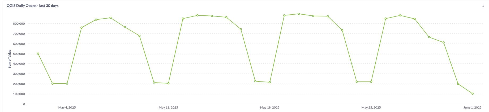
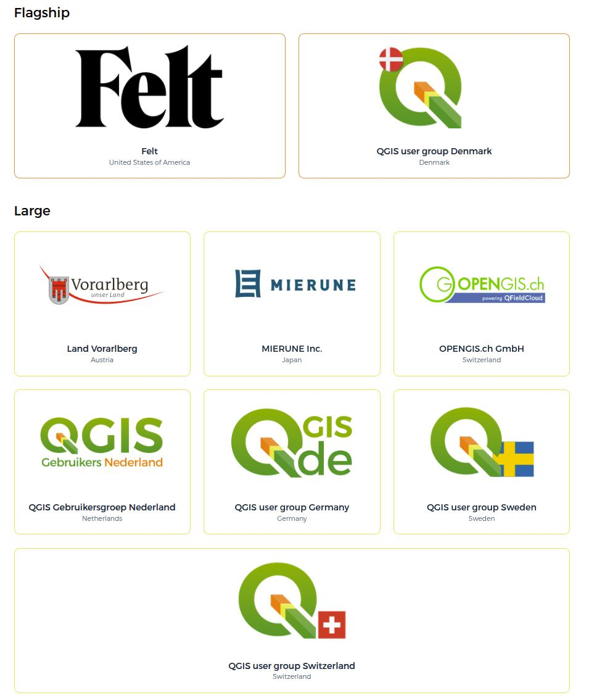
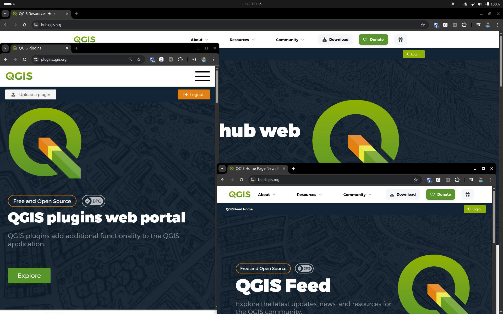
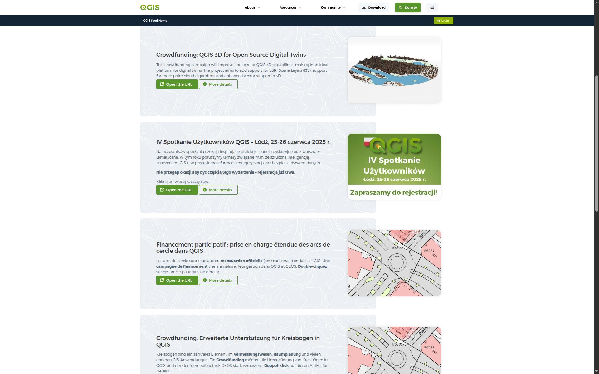

<!-- .slide: data-background="./assets/title.jpg"--> --- <!-- .slide: data-background="./assets/intro.jpg"--> --- ### <span style="color: var(--opengisch-green)">QGIS</span> AT A GLANCE - 🌍 Used by millions worldwide — across cities, forests, disaster zones, farms, ... - 💻 Runs on Linux, Windows, macOS — and Android, iOS via apps - 🗣️ Available in 100+ languages thanks to our global community - 🔁 Updated every 4 months with regular releases -  --- ### QGIS IS A <span style="color: var(--opengisch-green);"> DIGITAL PUBLIC GOOD</span> - ✅ Officially recognized by the Digital Public Goods Alliance in 2025 - 🎯 Meets DPG standards: open-source, privacy-respecting, inclusive, and aligned with the UN Sustainable Development Goals (SDGs) - 🌱 Supports global causes: climate action, urban planning, disaster response, public health - 🧩 Strengthens QGIS' role in international cooperation — especially with governments, NGOs, and educational institutions - 🙌 Reinforces our commitment to building digital infrastructure that’s open, accessible, and ethical note: This recognition opens doors for collaboration and funding. It shows that QGIS isn't just a tool — it’s a public good that empowers people worldwide. --- ### COMMUNITY <span style="color: var(--opengisch-green);">FIRST</span> <img src="assets/team.jpg" style="width: 70%; display: block; margin-left: 0;"> note: Now, if there’s one thing I want to be absolutely clear about today, it’s this: This project was started by a volunteer. It was grown by volunteers. And it’s sustained by people all over the world who believe in something bigger than only profit margins. We now have 35 official user groups, spanning every continent. From grassroots hackfests to full-blown conferences. From quiet pull requests to life-changing deployments. And that’s the secret: our strength is not just our code — it’s our community. --- ### PROFESSIONAL <span style="color: var(--opengisch-green);">USAGE</span> <p></p> --- ### HOW IS <span style="color: var(--opengisch-green);">QGIS</span> SUSTAINED?  note: The answer lies in **shared responsibility, professional transparency, and community investment**. Most of our income comes from **sustaining members**, followed by **donations** and **training certificate proceeds** And in **2025**, we’re planning to exceed **€475,000** --- ### WHO <span style="color: var(--opengisch-green);">SUSTAINS? 💚</span> <p></p> --- ### FINANCIAL GROWTH <span style="color: var(--opengisch-green);">& TRANSPARENCY</span> ##### But it’s not just about growth — it’s about <span style="font-weight: bold;" class="highlight-animate">how we use it.</span> - **Bug fixing** is our largest single allocation — this keeps QGIS stable and production-ready - **Infrastructure** (build systems, servers, packaging) ensures we scale reliably - **Documentation** gets a dedicated budget and full-time writer - And then there’s the **Grant Programme**, supporting community-driven innovation ##### All of it is published publicly in our financial reports. note: Celebrate the financial maturity of the project. This is community-powered sustainability. --- ### GRANT PROGRAM <span style="color: var(--opengisch-green);">2024-2025</span> - 💡 Direct investment in our community - 🛠️ 2024 grants focused on usability, performance, and real user needs - 🧱 Supports core foundations: not flashy, but essential - 🚀 Adds innovation and responsiveness on top of ongoing work - 🤝 Powered by the community — for the community note: Use this slide to underscore that investment in community pays back tenfold. --- ### QT6 ##### Transitions to <span style="color: var(--opengisch-green); font-weight: bold;">Qt6</span>, the modern application framework that QGIS is <span style="font-weight:bold;">built on.</span> - Security improvements - Modern codebase with simplified maintenance - Updated dependencies --- ### QGIS <span style="color: var(--opengisch-green);">4.0</span> - QGIS 4.0 will be Qt6-only - Tech preview around december - It won’t be an LTR, but will keep deprecated APIs to ease plugin transitions --- ### QGIS <span style="color: var(--opengisch-green);">4.0</span> - 4.0 Coming February 2026 - The LTR will follow in QGIS 4.2, scheduled for mid 2026 - New welcome screen  ##### <span style="font-weight: bold;" class="highlight-animate">The goal:</span> make the transition as smooth and low-risk as possible. note: This is a massive change — but we’re ready for it. And we’re making it as developer-friendly as possible. --- ### MACOS PACKAGE <span style="color: var(--opengisch-green)">IMPROVEMENTS</span> - Builds now use **vcpkg** for better maintainability - This allows us to finally support **notarised builds** — a requirement for modern macOS versions - It’s already proven to work — Already done for QField - Notarised builds of QGIS for macOS are **available** - 3.44 LTR + 4.0 dev ##### <span style="font-weight: bold;"> Seamless, professional user experience</span> across all major platforms. note: macOS users — we hear you! This is a big step forward for credibility and ease of use. --- ### HARMONISED <span style="color: var(--opengisch-green)">QGIS WEBSITES</span> ##### We’ve also made huge progress on the QGIS web ecosystem. <br> Multiple QGIS sites have been updated to reflect a <span style="font-weight: bold;">unified design and experience:</span> - hub.qgis\.org - plugins.qgis\.org - feed.qgis\.org - planet.qgis\.org - certification.qgis\.org - uc2025.qgis\.org ##### This harmonisation means better UX, seamless transitions across platforms, and easier navigation <span style="font-weight: bold; color: var(--opengisch-green)">for all users.</span> --- ### HARMONISED <span style="color: var(--opengisch-green)">QGIS WEBSITES</span> <p></p> --- ### DOCUMENTATION <span style="color: var(--opengisch-green)">WEBSITES</span> ##### Next year: - user manual - training materials - developer docs (?) --- ### PLUGIN <span style="color: var(--opengisch-green)">ECOSYSTEM HEALTH</span> ##### The plugin ecosystem in QGIS is <span style="font-weight:bolder;">thriving.</span> - The Plugin Repository now provides Qt6 compatibility info - A migration guide for developers will be available - Code migration tools are in the making note: This is what happens when developers and users work together. It’s not just a toolbox — it’s an ecosystem. --- ### PLUGIN <span style="color: var(--opengisch-green)">ECOSYSTEM HEALTH</span>  --- ### NEW CONTRIBUTORS SECTION ### ORGANISATIONS  --- ### NEW CONTRIBUTORS SECTION ### INDIVIDUALS  --- ### PLUGIN <span style="color: var(--opengisch-green)">ECOSYSTEM HEALTH</span>  --- ### <span style="color: var(--opengisch-green)">QGIS</span> FEED STRATEGY <p></p> --- ### <span style="color: var(--opengisch-green)">QGIS</span> FEED STRATEGY ##### Allows us to: - Push out **short-lived, high-value news** - Stay in sync with releases, updates, events - Give you fresh content every few days ##### We’re aiming for frequent posts — with most having a <span style="font-weight:bolder">validity of 10 days or less</span>. It’s quick, timely, and always relevant. note: Keep an eye on it — and consider contributing your own updates! --- ### LOOKING AHEAD #### So what’s <span style="font-weight: bolder;" class="highlight-animate">next?</span> ##### We’re not just thinking about patches and features — we’re thinking long-term strategy: - A more cohesive documentation experience - A language that can speak to big organisations decision makers - Secure, modern packages for every platform - Smarter build pipelines (trying to reduce energy consumption if possible) - And a community that stays open, welcoming, and global --- ### CURRENT <span style="color: var(--opengisch-green)">INITIATIVES</span> - Website translation: Led by QGIS\.org, focusing on getting the main website translatable - Vision & Mission statements: Tim & Marco, focusing on getting a clear messaging out - Security Initiative: Led by Oslandia and OPENGIS\.ch, focusing on hardening the platform and improving secure development practices note: These projects are great examples of how focused contributions, backed by the community, continue to push QGIS into new domains. --- <!-- .slide: data-background="./assets/uc2026.jpg"--> --- <!-- .slide: data-background="./assets/end-fj.jpg"-->